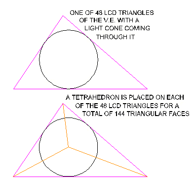
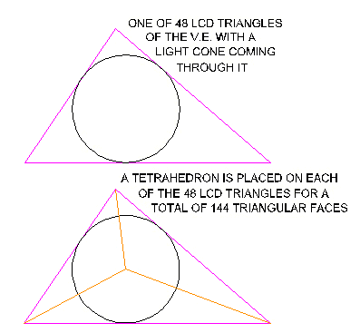
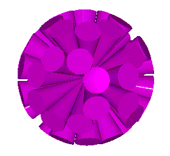
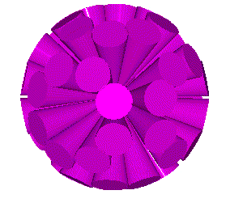
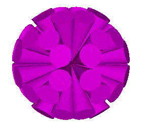
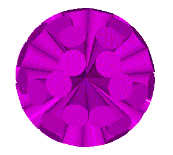
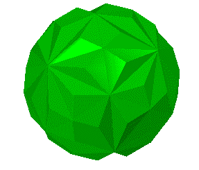
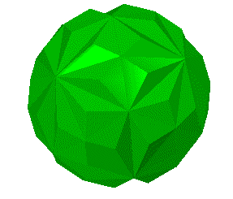
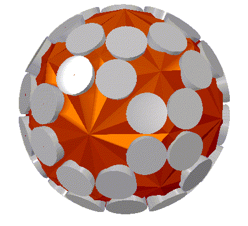
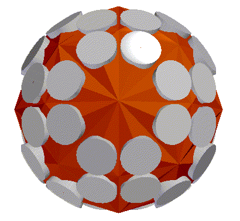

The outer polyhedron is said to have 120 faces. This is another interesting number because the icosahedron will generate 120 LCD spherical triangles, covering the entire sphere. So, maybe the outer polyhedron corresponds with the polyhedron defined by the 120 LCD triangles of the Icosahedron.
Here is a "template" drawing from which you can assemble the 48 LCD polyhedron.
My interpretation of what Lynnclaire has told me is that she saw a polyhedron inside another polyhedron. The inner most polyhedron had 48 cones of light coming out of it at 48 vertices. This polyhedron had 144 triangular faces. The outer polyhedron had 120 triangular faces.
From my work on R. Buckminster Fuller's geometry, I was able to point out that there are 48 LCD (Lowest Common Denominator) triangles covering the entire sphere and defined by the great circles of symmetry of the V.E. (cuboctahedron). So, we place a light cone in each of the 48 LCD triangles.
Next, we add a tetrahedron (not regular) onto each of the 48 LCD triangles. This results in 3 triangular faces for every LCD triangle. This gives 3 x 48 = 144 triangles for the resulting polyhedron.
 

So, the resulting "inner" polyhedron has 144 triangular faces, 62 vertices (48 of the vertices have light cones coming out of them), and 204 edges.
Here are some images of the 48 cones.
   Here are some images of the 144 faced polyhedron.
 

Here are some images of the 48 cones coming through 48 vertices of the 144 faced polyhedron.
 The outer polyhedron is said to have 120 faces. This is another interesting number because the icosahedron will generate 120 LCD spherical triangles, covering the entire sphere. So, maybe the outer polyhedron corresponds with the polyhedron defined by the 120 LCD triangles of the Icosahedron.
Usage Note: My work is copyrighted. You may use my work but you may not include my work, or parts of it, in any for-profit project without my consent.